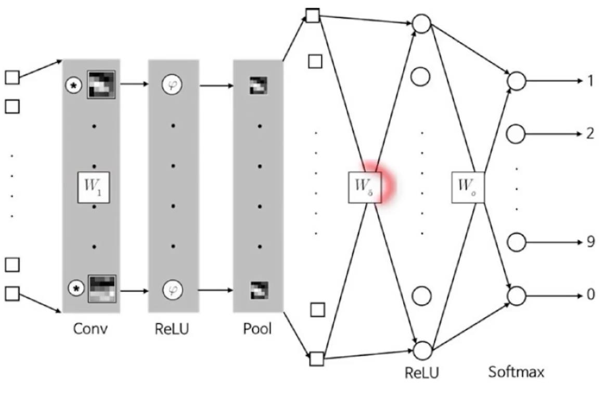
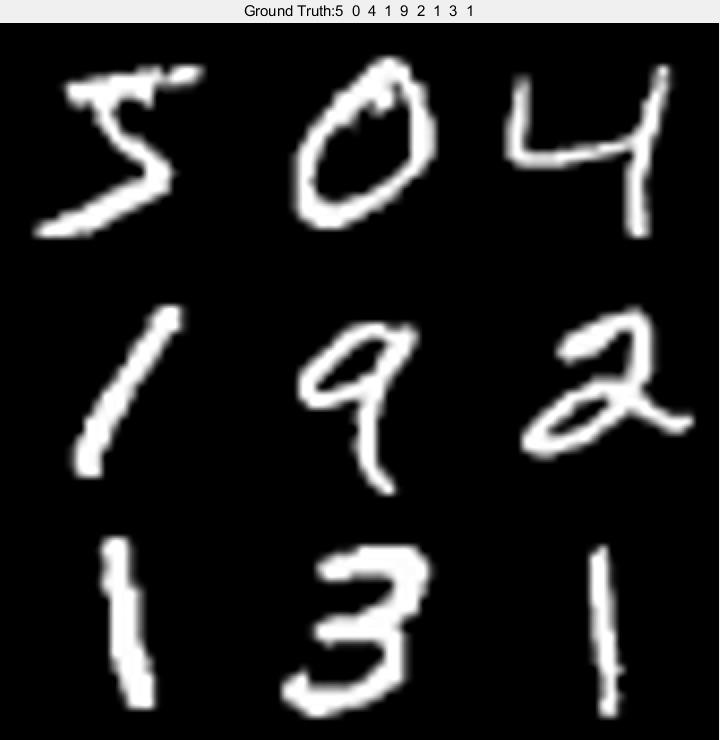
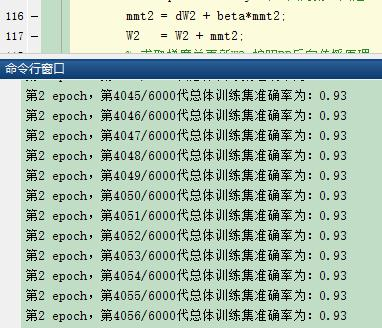
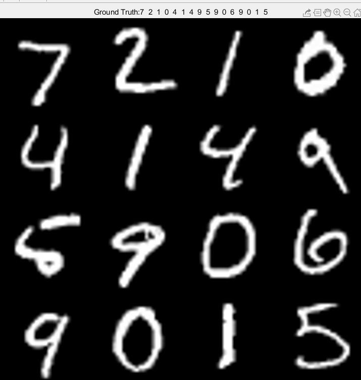
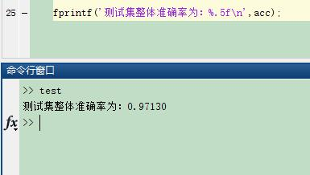

现当今机器学习/深度学习技术在某些具体垂直领域已被大量广泛应用到现实世界中，已经不再像前几年那么“火热”，与之对应的各类深度学习框架也是“百花齐放,百家争鸣”，框架终究只是个工具，不过简化了从“零”开始复杂繁琐的工作，让很多普通人都可以快速入门。本博客不单纯完成一个任务，也不涉及过多理论推导，而是真正体会到算法工作一步步原理，逐步实现，岂不乐乎？
本篇博客以经典的MNIST手写数字识别为例，逐步一步步实现通用的深度学习网络模型架构，不调用任何第三方库和框架，使用matlab进行快速搭建、训练和测试。程序中所涉及的理论知识及使用的变量名严格按照DNN神经网络的反向更新（BP）、卷积神经网络(CNN)反向传播算法 这两篇博客的符号和公式进行。MNIST手写数字包含60000张训练图片，10000张测试图片，图片大小为28×28，灰度图像，官网给出的是四个二进制存储的文件,分别为训练和测试的数据集和标签文件。假设读者已经明白所给链接博客的理论知识（不清楚可以参考更多文后的文献和程序代码中给的链接），我们接下来进行下面的具体实现。
网络架构设计
考虑到网络简单和易用性，根据MNIST数据集特点，设计了四层网络层，分别为conv+relu+meanPool、conv+relu+dropout、conv+relu+dropout、conv+softmax四个连续模块层。每个模块层进行串连连接，不涉及跳层结构，其中第一个模块层的conv是CNN卷积操作，卷积核大小为9×9×1×20,四维矩阵（h×w×c_in×c_out），即20个卷积核；第二个及以后模块的conv其实是全连接层，因为前面的层每个神经元都会与下一层所有神经元进行全连接，神经元个数分别人工设定为95、45、10。这三层是用BP反向传播原理进行参数更新，第一层是按照CNN的反向传播算法进行更新。网络示意图如下,示意图中只画了CNN层和一个最后模块层：

网络训练工作流程
1、数字图像训练集预处理：具体是60000张图像和标签通过二进制方式逐步读入，然后归一化为28×28×1×numsImg大小，[0,1]范围，float类型数据；标签为numsImg×1 大小,0~9数字，float类型数据；
2、超参数设定：具体是网络权重学习速率alpha=0.01，动量因子beta = 0.01, dropout层丢弃因子ratio = 0.01，总循环代数epoch=2,批处理大小batchSize = 10;权重和梯度初始化，注意大小和范围；这些超参数主要根据经验确定。
3、反向传播算法+梯度下降算法，迭代更新参数寻优。
训练主文件为“train.m”,
训练预览部分数字图像情况：

训练迭代过程：

网络测试工作流程
待网络训练完毕，测试流程与训练流程大致相似，也需要进行正向传播，但也有些区别，测试过程不涉及到网络参数更新，训练的一些因素也需要冻结屏蔽。
1、数字图像测试集预处理：具体是10000张图像和标签通过二进制方式逐步读入，然后归一化为28×28×1×numsImg大小，[0,1]范围，float类型数据；标签为numsImg×1 大小,0~9数字，float类型数据；
2、超参数学习速率，动量因子，dropout等需要屏蔽，屏蔽方式见"Predict.m"内容。
3、计算统计测试整体准确率。
测试主文件为“test.m”,

测试集总体准确率：

code
** talk is cheap,show me the code!**
项目代码地址
train.m
1 | %% 1、数据MNISTData预处理 |
test.m
1 | %% 测试集测试 |
ConvLayer.m
1 | function Z = ConvLayer(imgs, W) |
DropoutLayer.m
1 | function [out_features,mask] = DropoutLayer(in_features, ratio) |
onehot.m
1 | function onehotMatrix = onehot(labels,nClasses,order) |
PoolLayer.m
1 | function out = PoolLayer(in) |
Predict.m
1 | function predict_L = Predict(W1,W2,W3,W4,X_Test) |
preProcess.m
1 | function out = preProcess(in) |
processMNISTdata.m
1 | function [Imgs,Labels] = processMNISTdata(imageFileName,labelFileName) |
ReLULayer.m
1 | function y = ReLULayer(x) |
SoftmaxLayer.m
1 | function y = SoftmaxLayer(x) |
Reference
神经网络BP反向传播算法原理和详细推导流程
梯度下降(Gradient Descent)简析及matlab实现
深度学习笔记（3）——CNN中一些特殊环节的反向传播